Overview
Dell had already built a dark mode. It used Slate, a muted blue drawn directly from Dell's brand palette.
The existing dark mode had already been built, but early feedback showed low willingness to adopt it, accessibility failures, and discomfort reading the interface.
I joined the work to investigate those accessibility failures, not to redesign the theme. The investigation became a broader product and system decision: whether dark mode should continue to be defined by a brand color, and if not, what a Dell-owned alternative should look like.
This case study focuses on the Dell Sales Application (DSA), an internal-facing sales tool. The initiative ran internally under the codename Project Aurora.
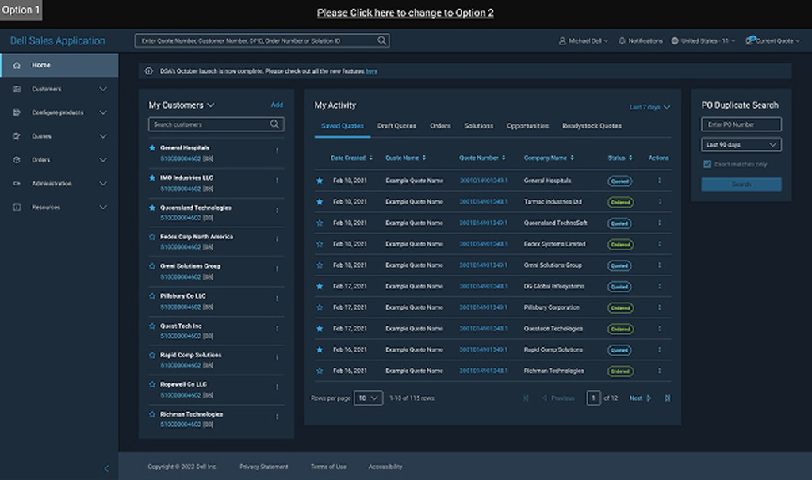
01. Problem
1.1 The Starting Point
Before I joined the project, Dell had already run an early design review with roughly 100 people. They were shown the Slate dark mode interface and asked whether they would use it.
Only 30% said yes. Of that group, 25% cited “it's our brand color” as their reason for liking it. The remaining 70% said no, with accessibility problems and general discomfort among the reasons they gave.
Several components also failed WCAG contrast requirements outright.
The signal was important: people were not rejecting dark mode as a concept. They were rejecting the implementation in front of them.
1.2 My Role
My team was originally brought in to investigate the accessibility failures and report findings back to the brand team. I led the design direction for the initiative, working with a design lead and one designer.
As the investigation expanded, I coordinated with Branding, Business, Accessibility, Product Management, and Dell Design System (DDS). My role grew from investigating a color problem to defining the design direction, building the evidence for the decision, and coordinating its path into implementation.
02. Reframe
2.1 The Core Insight
The starting assumption was straightforward: Slate was a Dell brand color, so using it in dark mode reinforced the brand.
I tested that logic against the actual job dark mode needed to do. If the same principle were applied to another brand, an Airbnb dark mode might be expected to revolve around signature red. That would preserve the brand, but it would not automatically make the interface comfortable to use in low-light conditions.
That distinction became the core of the project: dark mode is a utility first, not a branding surface. For this product, dark mode had to optimize first for comfort, legibility, and accessibility. Brand expression could still exist around that foundation rather than determining the surface color itself.
A second framing helped move the discussion from preference to product risk:
My argument in cross-functional discussions was that Slate introduced an unfamiliar pattern into a behavior users already understood from other tools.
That changed the burden of proof. The question was no longer simply “Why is grey better?” It became “Why should users have to relearn dark mode in order to use Dell?”
Problem Statement
Dell's Slate-based dark mode had low willingness to adopt and failed WCAG contrast requirements. We needed a dark-mode system that was comfortable, accessible, evidence-backed, and still clearly owned by Dell.
2.2 Testing the Obvious Fix
The first solution was intentionally simple: use Dell's existing Grey 800–900 values instead of Slate.
That did not solve the problem. The colors still failed accessibility checks, and they did not produce the visual behavior we were looking for. The answer was not already sitting in the existing palette.
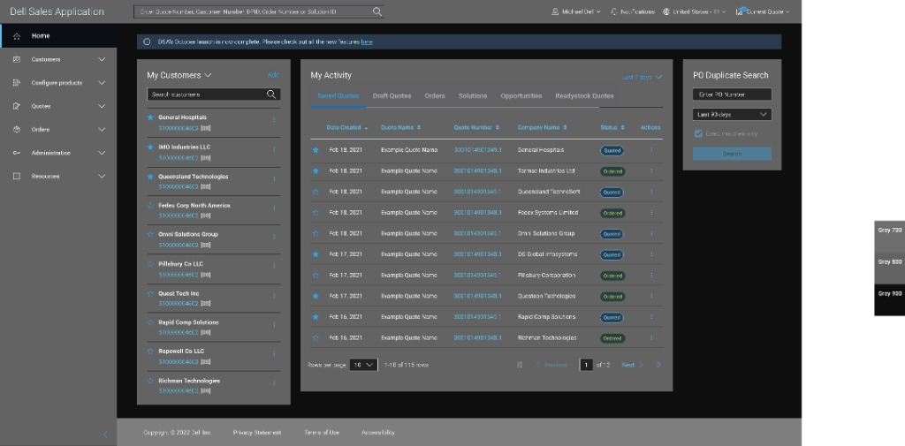
03. Design
3.1 Benchmarking the Pattern
To establish what a comfortable grey dark mode could look like, I brought established reference patterns from tools people already use into Dell's actual screens. I tested dark mode colors from VS Code, Google, and Microsoft Teams directly against DSA interfaces.
The internal design team responded positively almost immediately. That gave us a visual direction, but it did not give us something Dell could ship. We could not simply adopt Google's grey or Microsoft's grey and call it a Dell system.
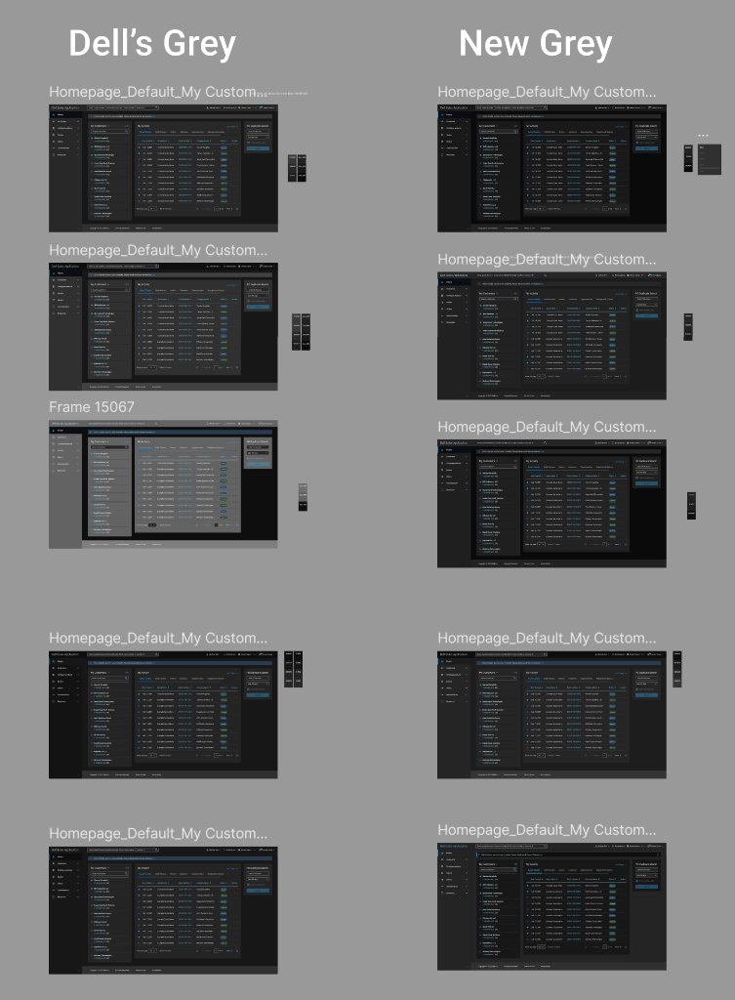
3.2 Building a Dell-Owned Scale
The next constraint was more useful: find a grey that behaved like established reference systems while still belonging to Dell.
I went back into the gap between Dell's Grey 800 and Grey 900 and interpolated 20 distinct shades. That gave us a finer-grained scale than the existing system and created enough resolution to search for a close match rather than choosing from two or three coarse values.
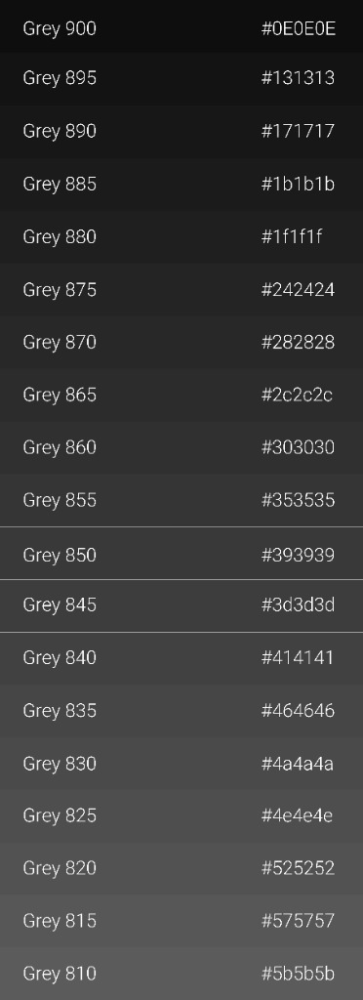
3.3 Making the Decision
Twenty options gave us range, but not a decision rule. I needed an external reference point that was already established in a mature design system.
I reviewed how major systems handle dark mode, including Salesforce, IBM Carbon, Adobe Spectrum, Microsoft Fluent, and HP. Google's documentation was particularly useful because it clearly explained its use of #121212 as a dark-theme surface rather than pure black. The reference gave us a concrete benchmark for the visual behavior we were trying to reproduce.
I compared #121212 against the 20 Dell-owned interpolated shades, looking for the closest visual match while preserving the surrounding scale and elevation behavior. #171717 was the closest fit, so it became Grey 890.
That decision also established a broader 20-step ramp from Grey 900 down to Grey 810, giving the system fine-grained control over surface and elevation rather than relying on the limited range available in the previous Slate approach.
The new grey system was then checked component by component against WCAG contrast requirements. We evaluated actual button, tag, and text pairings rather than validating only the base surface color.
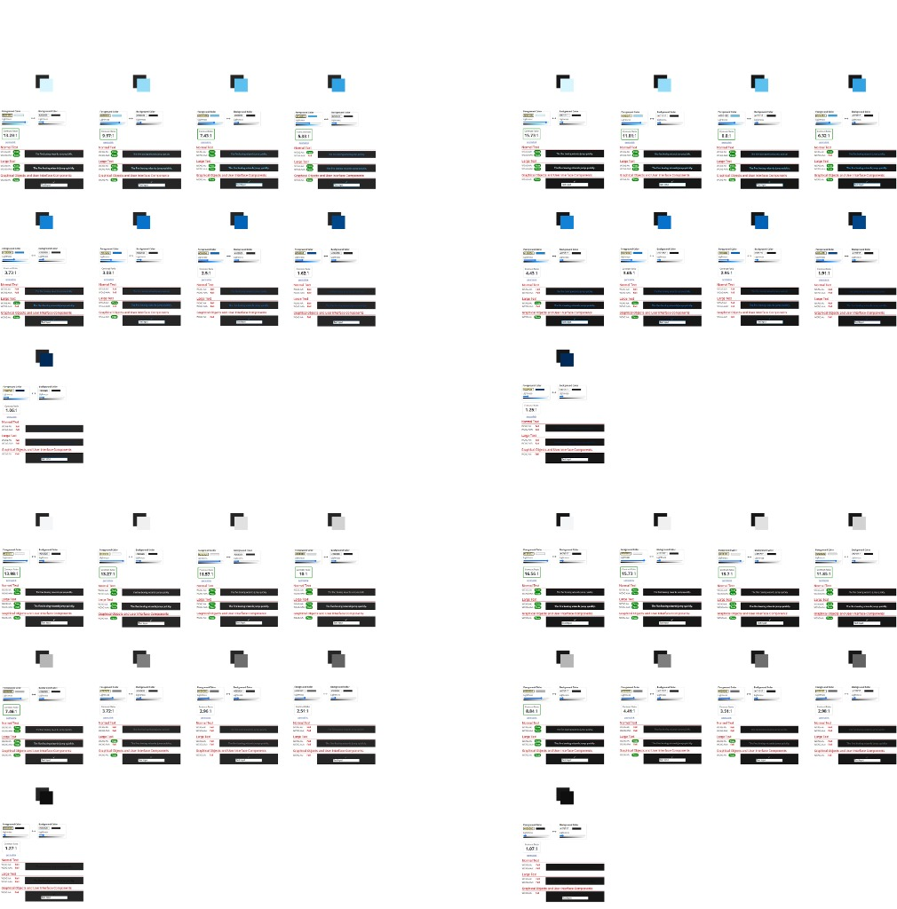
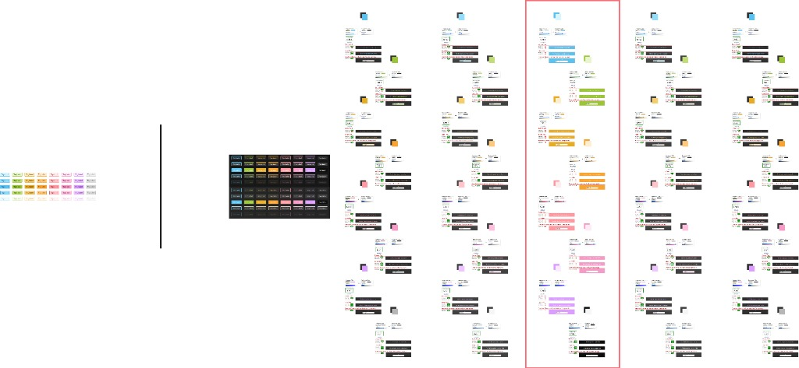
The audit gave us a more precise picture than a simple pass/fail exercise. High-emphasis pairings such as primary buttons, body text, and icons cleared AA comfortably, with several reaching the 11:1–16:1 range. Lower-emphasis pairings were not treated as acceptable by default: variants below 2:1 were removed from text use and restricted to large text, graphical, or decorative contexts.
We also tested elevation behavior. IBM Carbon's dark theme reinforced the same principle: surfaces become lighter as they move closer to the virtual light source. The base background uses #161616, with Layer 1 at #262626. That model helped us ensure the new palette behaved as a system rather than as a collection of isolated grey values.
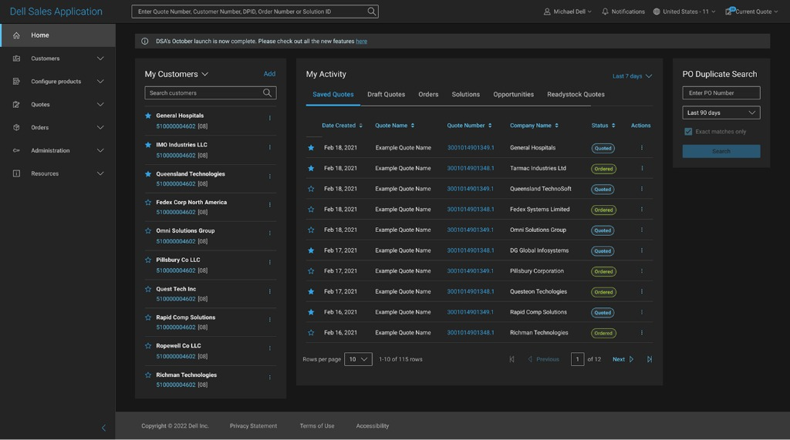
04. Build the Case
4.1 Aligning the Organization
The design decision only mattered if the organization could support it. The 20 new shades were not part of Dell's official brand guidelines, so moving forward required alignment across groups with different definitions of risk.
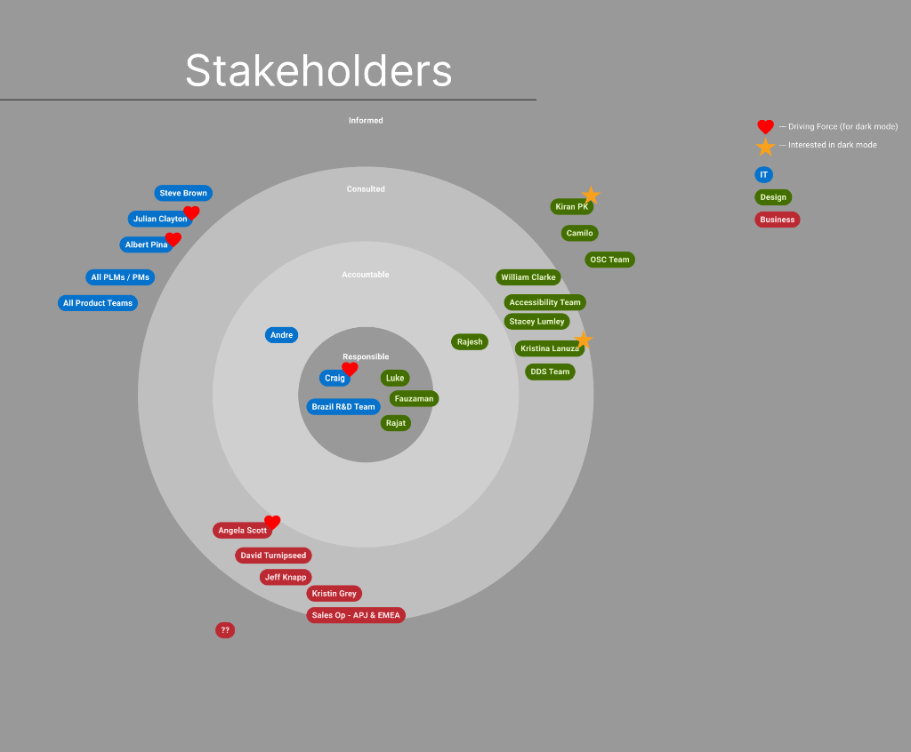
- Branding needed to know whether moving away from a signature hue would reduce Dell's visual distinctiveness.
- Business needed to understand the roadmap and approval risk.
- Accessibility needed measurable WCAG evidence, not a visual preference argument.
- Product Management needed clarity on the blast radius and whether this was a theming change or a broader DSA change.
- DDS needed confidence that the new shades would not fracture the existing token system.
I adapted the same core case to each concern: documented accessibility failures, the utility-first role of dark mode, and the familiarity argument. I also reframed the decision so Slate did not have to disappear. It could remain available as a theme option rather than being forced as the default.
That gave each group a way to support experimentation without treating the decision as a permanent loss of the existing brand expression.
4.2 Two Rounds of Evidence
Validation happened in two rounds with different audiences and different purposes.
The first was a directional internal survey of 300 respondents across the company, including designers, product managers, and developers. We showed the Slate and grey interfaces side by side and asked which direction they would choose. It was intentionally a temperature check, not formal usability testing.
The second was a focused study with 69 external users. Participants compared the greyish and blueish options and explained their choice in terms of comfort, contrast, or familiarity. Comfort was a recurring reason, and the grey direction was preferred overall.
71% preferred the grey system. The internal survey alone would not have been strong enough evidence to make the case. The combination of directional internal signal and external-user reasoning made the decision much easier to defend.
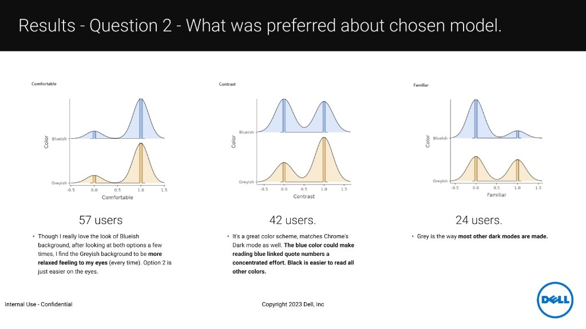
05. Scale
5.1 From Color Decision to Product Infrastructure
Once the palette was validated and approved, the next challenge was implementation. Raw hex values had to become semantic tokens that developers could use consistently.
My team did not own deep expertise in Dell's design-system architecture. Instead of recreating that infrastructure ourselves, we brought in a specialist from DDS to lead the tokenization work. The design decision remained ours to drive; the system architecture was handed to the team that owned it.
Because this was an MVP scoped to DSA, the token system was built for developers. A full Figma library for designers came later outside this phase.
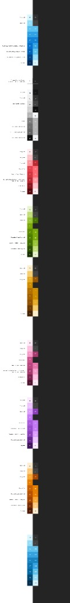
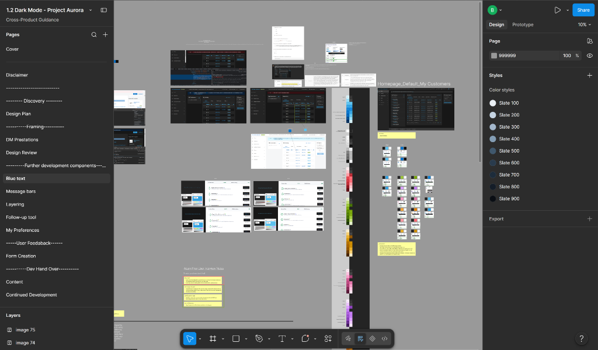
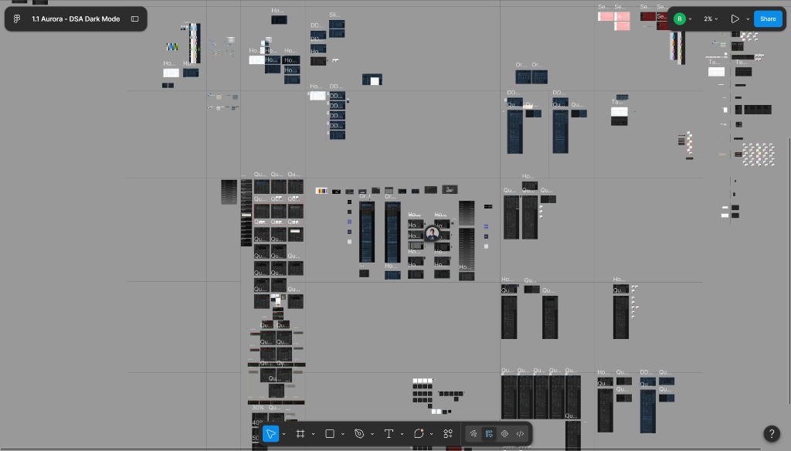
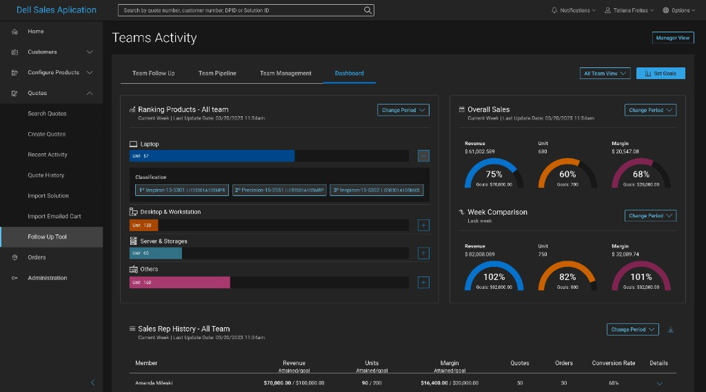
DSA product teams had written extensive custom CSS to force their components into Slate theming. Those workarounds were potential breakage points every time the experience changed.
Tokenizing the new grey system reduced that dependency. Developers no longer needed those Slate-specific hacks to apply the new theme consistently; the system could handle the theming in a shared way.
We also tested the system against live dashboard components because DSA is not only forms and quote tables. Charts, gauges, and ranking widgets all had to work against the new palette. That let us validate the system with real data rather than only static UI mockups.
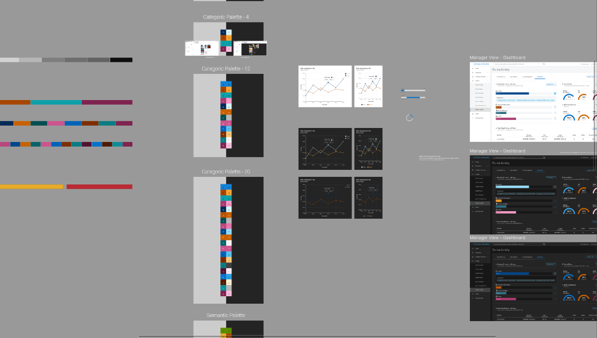
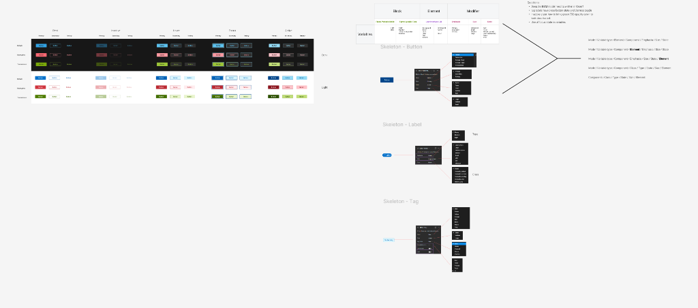
5.2 Outcome
The project changed more than the background color.
It replaced a brand-driven dark-mode assumption with a Dell-owned system grounded in accessibility, established dark-mode patterns, user preference, and implementation constraints.
The new direction received 71% preference in validation, was converted into semantic developer tokens, and reduced the need for Slate-specific CSS workarounds. Post-launch, 37%+ of DSA users were using dark mode daily.
The important outcome was not choosing grey over slate. It was creating enough evidence, structure, and shared ownership for an organization to make a decision that had previously been treated largely as a matter of brand preference.